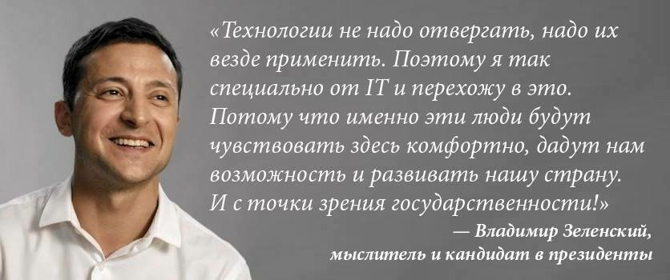

– Украина - актриса немецких фильмов для взрослых - она готова принять в любом количестве с любой стороны.
- Если на Востоке и в Крыму люди хотят говорить по-русски - отцепитесь, отстаньте от них, на законном основании дайте им говорить по-русски
- Даже став президентом, не откажусь выйти на сцену. Если есть предложение - конечно!
- У меня нет с Коломойским отношений. У нас рабочие отношения
- Я вас лично позову к нам в команду, чтобы мы с вами вместе были в этом творческом говне
- Что такое план Б, когда мы всю жизнь живем по плану А?
─ И даже эээээ проскользнула такая... А потом уже за этим столом уже эээээ проскользнуло страшное слово министерство ай-ти и недайбог иначе ай-ти индустрии не будет. В принципе правильно. Вот там значит по поводу он сказал смотрите вообще вся эта ай-ти история здесь потому что ФОПы для того чтобы что шесть процентов. Правда вам кто-то там популистически щаз заявил шо пятерку, пять, пять процентов ну и где там эээээ смотри как только и нас всех устраивает. Нас всех устраивает. То есть мое мнение, что ФОПы нужно эээээ, вы правильно совершенно правильно сказали когда это не отмывка, когда мы понимаем чем занимается структура бизнеса той или иной компании ничего страшного пусть будет ФОП. Я бы сейчас неплохо я просто очень боюсь такие вещи вообще трогать это как труханул грушу и все посыпалось, понимаете? Мне кажется если сегодня этот климат по большому счету это же то о чем мы говорили там для каких-то средних мелких бизнесов у людей уже нет практически налогов, ну так а что такое ФОП тогда, ФОП ну пускай это частный ай-тишник пусть он работает пусть он платит свои шесть процентов честно но хочет быть здесь и эти все деньги что важно он же тратит в Украине вот же самое главное. Поэтому я бы эту сферу и не только эту но очень много особенно все, что связано со старт-апами я бы их не мучил и не обращал бы внимание сколько они миллионов сейчас получают. Не тот уровень экономики эээээ не то нету то о чем мы говорили ээээ переходя в то, что бы мы делали в ту часть у вас же много вопросов когда ээээ просто когда будет у нас легко оформить бизнес, когда все будет он-ла-он-лайн, когда то мы очень хотим сделать электронную страну. Меньше чтобы человек с чиновником просто рукопожатился. Когда этого не будет это и мы будем отходить от коррупции все дальше и дальше. Я буду говорить какие-то лозунги с которого мы начали обсуждение слушайте ну давайте мы вообще уйдем от кэша да, но это просто сейчас нельзя, это нельзя нигде показывать и рассказывать, потому что мы там сразу потеряем ха-ха-ха те деньги которые торгуют помидорами на рынке, мы просто потеряем там мммм хоть какую-то поддержку, но стремиться нужно туда, технологии не надо отвергать, надо их везде применить, поэтому я так специально отойти и перехожу в это потому что именно эти люди будут чувствовать здесь комфортно дадут нам возможность и развивать нашу страну и с точки зрения государственности везде где возможно все перевести в он-лайн.

- Здесь приятнее, чем на Банковой. Я там три дня, а здесь - живые люди
- Я лично один ничего не могу поменять. Только вместе. Это правда. У вас у всех мозгов гораздо больше, чем у меня… Не, ну шо-то у меня есть, конечно
- Есть такой товарищ Гуттенберг. Я бы его назвал заросшим Стивом Джобсом. Что он сделал? Создал книгопечатный пресс. Тогда чувак порвал эпоху. Красавец
- Да, ребята, у нам много проблем... Много факапов. В отсутствие электросетей правительство может реально шагать в сторону возобновляемой электроэнергетики, в отсутствие банковской инфраструктуры - то, что реально у нас происходит, - можно идти к цифровому банкингу, в отсутствие транспортной логистики надо идти к дронам
- Людей, которые нам мешают, пора называть "Что".
- Это к делу не имеет никакого значения
- Мне бы хотелось, чтобы вам всем хотелось жить
- Покажу фразу великого человека, которую он наверное и не говорил, но он великий
─ Кстати, я хочу сказать, что, немного похвастаться Украиной и украинцами. Всегда было представление во всем мире, что Украина, это, в первую очередь, сельское хозяйство, это шахты, это металлурги. А туристы говорили, что в Украине очень красиво, очень вкусно и очень красивые люди, особенно женщины. Да, все это есть, и оно остается нашим брендом
- У нас була програма «велике будівництво» на 85 міліардів гривень, ми будуємо... ммм... будували... ммм... збирались побудувати чотири тисячи доріг, це в десять разів більше ніж в будь-якому році України на цей рік. Так ми навпаки зараз збільшуємо цю програму, знайшли ще дев'ятнадцять... еее... ні, знайшли ще там біль еее... двадцять... еее... двадцять з чимось міліардів гривень...
- – У вас есть план? (Шустер)
– В мене є відчуття... Є план «Б», структура, це не план «Б», я впевнений що це план «А» ми так будемо робити- – Украина может выжить без денег МВФ? (Шустер)
– Чи може людина прожити без води тиждень? А навіщо?- Банківський закон ви про нього знаєте. Банківський закон зараз це всі теж бачать - 16 тисяч поправок. Шістнадцять, ви зрозумійте шістнадцять тисяч, жодного закону я в цьому впевнений, я не знаю може були такі випадки, але я впевнений, да? А до цього була земля, вибачте що стрибаю але до цього була земля...
- – Цей корабль під назвою «Слуга народу»... Головне завдання для цього корабля просто йти вперед... Я надав їм можливість. Якщо вони хочуть іти вперед, навіть коли є такий шторм, вони підуть, від них все залежить. Але багато у цьому штормі, у цьому океані, у цій Верховній Раді дуже багато акул, дуже багато там людей плавають і все хоче домовитись з цією командою... Всі хочуть, щоб цей корабель потонув, всі хочуть
– Всі, це хто? (Шустер)
– В Верховній Раді, да більшість- Зараз треба вижити, потім вирулимо!
Що ось це ось все, воно якось ось так, це саме, та не тому що, а всупереч тих, що не склалися можливостей, через які ми всі ось відчуваємо якісь, можливо, це саме, але на жаль так ось якось то ось